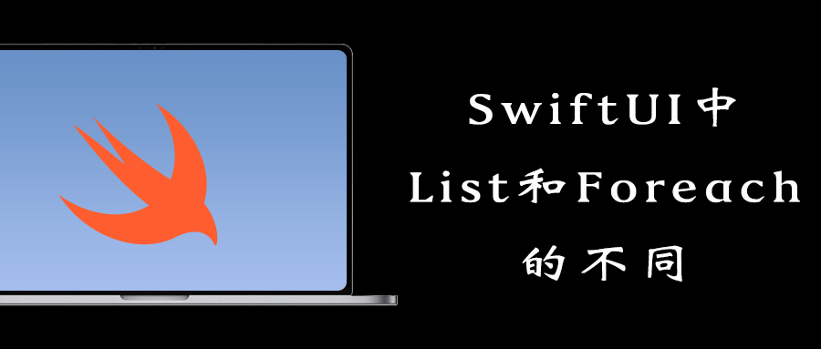
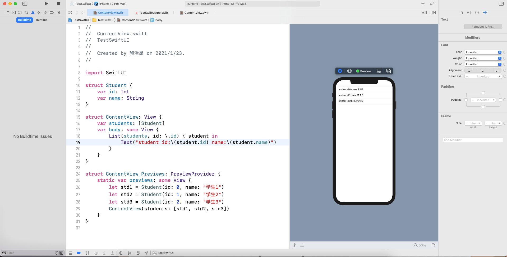
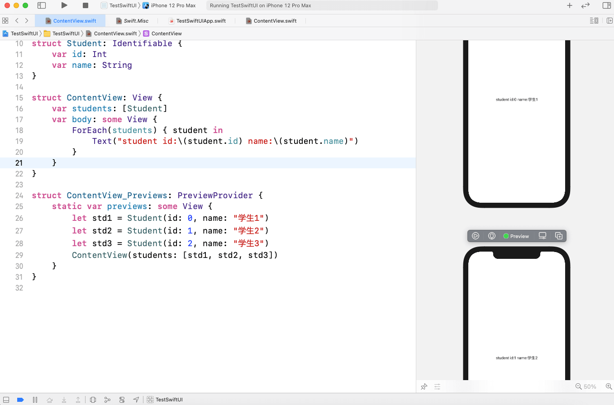
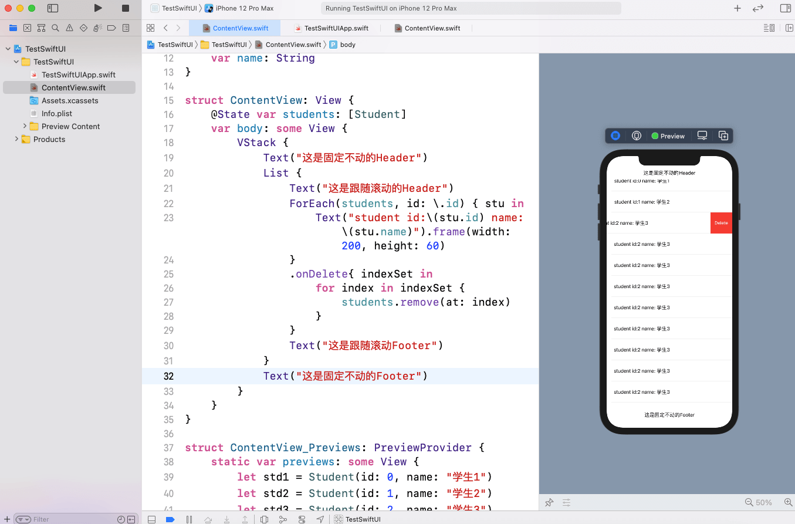
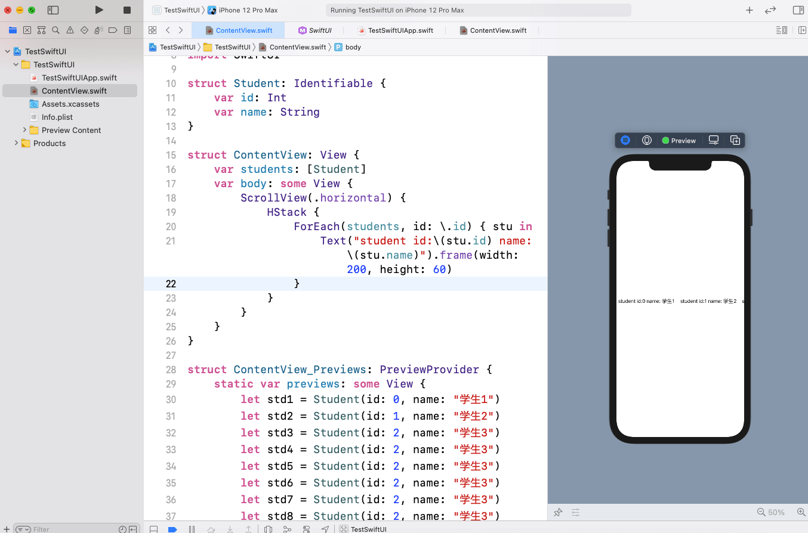
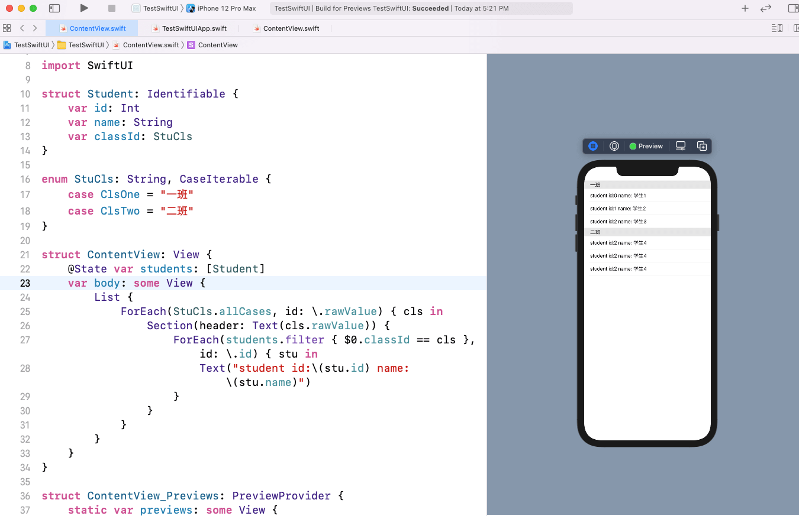

在SwiftUI中使用ForEach和List模仿UITableView、UICollectionView
ForEach和List都可以创建列表，它们都是SwiftUI重要的组件，它们用来替代UIKit中的UITableView。通过这篇文章我们将学习到ForEach和List的相关用法。
这篇文章非常适合SwiftUI入门的同学。
到公众号【iOS开发栈】学习更多SwiftUI、iOS开发相关内容。回复“博客”免费获取各大互联网公司面试题。

List的用法
首先来看一下List。List最简单的用法
1 | List(0..>10) { |
这样只是简单的把一个文字迭代了10遍组成一个列表。下面假设有一个学生数组，数组是由20个字典组成，每个字典包含学生的id和姓名两个元素。

让我们来看一下List的创建方法：
1 | List(students, id: \.id) { student in |
List的初始化用到了3个参数：
- 一个未命名的
data，被迭代的数组。这里我们用的是students。 - keypath类型的
id参数，用来唯一区分当前迭代到的元素是数组中的哪一个。 - 最后一个参数是一个闭包，每一次迭代都会把闭包中的view组成一个新的view。因为这是最后一个参数，所以可以使用尾随闭包。
ForEach的用法
ForEach和List一样都可以进行数组迭代来创建列表，把上面的例子用ForEach实现。

ForEach的参数和List几乎一样，这里不再赘述。
List和ForEach的不同
从上图可以看出ForEach和List的语法非常的相似，不过ForEach在Preview中展示的效果却分成了好多个屏幕。
这个效果其实和下面的代码是一样的。
1 | struct ContentView: View { |
之所以会是这样，是因为ForEach并不会生成一个容器来包装闭包里面的View，而List却正好相反，并且ForEach的列表是不能滚动的，也就是说当里面的view超出了ForEach的父视图的大小是不能滚动的。这也是咱们在使用List和ForEach的时候需要注意的点。
List和ForEach的适用场景
因为List会默认生成一个容器来包装它里面的子view，所以它更适合单独使用来创建一个可以支持纵向滚动的列表，就像咱们上面的用法。
而ForEach不会生成一个容器，而且不能支持滚动，所以一般把它嵌套在其他容器里面使用。
List嵌套ForEach
嵌套在List里面可以实现类似带header的UITableView的效果，这里同时展示了固定不动的Header和跟随滚动的Header。
1 | struct ContentView: View { |

这里面有两点需要注意：
@State通过添加数据绑定使view的改变和数据联系起来，如果不添加这个会报错 Cannot use mutating member on immutable value: self is immutable.onDelete添加了这个modifire后出现左滑删除的效果
ScrollView嵌套ForEach
用横向滚动的ScrollView嵌套ForEach可以实现类似UIKit中横向滚动的UICollectionView。

Section嵌套ForEach
使用List、Section、ForEach嵌套来实现类似于UITableView的分组效果。
还是使用上面的学生例子，现在我们来给学生分班。先来创建两个班级：
1 | enum StuCls: String, CaseIterable { |
把学生划分到班级里面
1 | struct Student: Identifiable { |
接下来创建几个分好班的学生：
1 | let std1 = Student(id: 0, name: "学生1", classId: StuCls.ClsOne) |
最后，结合List、ForEach和Section创建可以分组的列表
1 | List { |

到公众号【iOS开发栈】学习更多SwiftUI、iOS开发相关内容。回复“博客”免费获取各大互联网公司面试题。
总结
在这篇文章中我们学习了SwiftUI中List/ForEach/ScrollView/Section的用法，并利用一个例子详细说明了前两个的不同和使用场景。你应该学到了：
List和ForEach的用法，它们之间的区别和使用场景- 怎么创建一个像UICollectionView一样横向滚动的列表
- 类似UITableView的分组列表要怎样实现
- 头部固定不动和跟随滚动的列表的实现方案